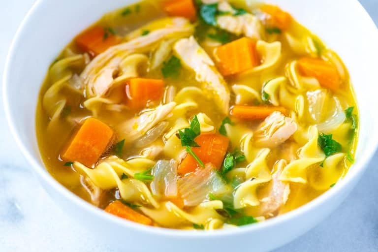

Chicken Noodle Soup

This is a picture of a bowl of chicken noodle soup :D
Home
Ingredients:
- 1 pound skinless, boneless chicken thighs, 4 to 5 thighs (450g)
- 5 ounces egg noodles or pasta of choice (140g)
- 2 tablespoons butter, chicken fat, or olive oil (28g)
- 1 large onion, chopped
- 2 ribs celery, chopped, optional
- 1 heaped tablespoon minced garlic, 4 cloves
- 2 bay leaves
- 3 sprigs fresh thyme or use 1/2 teaspoon dried thyme
- 8 cups chicken stock or broth, low sodium, or use homemade stock (1.89L)
- Salt and pepper, to taste
- 1/4 cup fresh parsley, finely chopped
Steps:
- Melt the butter in a large pot or Dutch oven over medium heat. Add the diced onions, carrots, and celery, and cook, stirring every few minutes, until the onions turn translucent and the vegetables begin to soften, about 5 to 6 minutes.
- Stir in the garlic, bay leaves, and thyme, and cook for another minute until the garlic smells fragrant.
- Pour in the chicken stock and bring the soup to a gentle simmer (you should see small bubbles breaking on the surface). Taste the broth and adjust with salt and pepper as needed. Depending on your stock, you may need to add a teaspoon or more of salt to build a rich, flavorful broth.
- Nestle the chicken thighs into the pot so they’re fully submerged in the broth. Bring the soup back to a low simmer, then partially cover the pot, leaving a small gap for steam to escape.
- Cook, stirring occasionally, until the chicken is cooked through and tender, about 20 minutes. Transfer the chicken to a plate. If the broth reduces too much, add a splash of stock or water and lower the heat to medium-low.
- Stir the noodles into the simmering soup and cook until tender, about 6 to 10 minutes, depending on the type of noodles you’re using (check the cook time on the package).
- While the noodles cook, shred the chicken into bite-size pieces using two forks (or dice it into cubes if you prefer).
- Return the shredded chicken to the pot and taste again for seasoning. Add more salt and pepper if needed. Stir in fresh parsley, then ladle your chicken soup into bowls and enjoy!